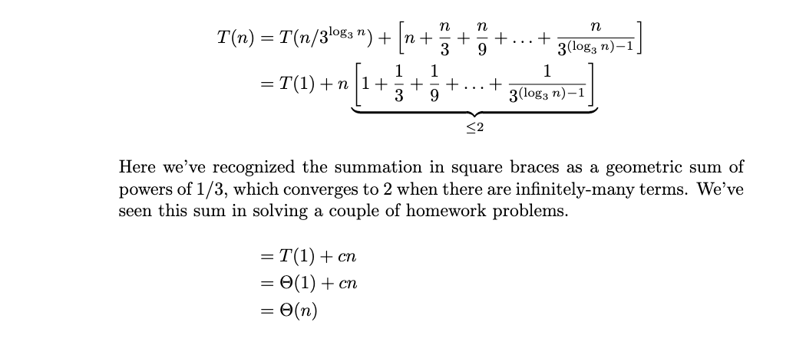

Practice problems for topics on Quiz 03.
Tags in this problem set:
Tags: lecture-05, recursion, binary search
Suppose binary_search is called on a sorted array of size \(n\). In total, how many recursive calls to binary_search are made in the worst case?
\(\Theta(\log n)\)
Tags: lecture-05, binary search
Consider the version of binary search shown below:
import math
def binary_search(arr, t, start, stop):
"""
Searches arr[start:stop] for t.
Assumes arr is sorted.
"""
if stop - start <= 0:
return None
middle = math.floor((start + stop)/2)
if arr[middle] == t:
return middle
elif arr[middle] > t:
return binary_search(arr, t, start, middle)
else:
return binary_search(arr, t, middle+1, stop)True or false: if the target element t occurs multiple times in the array, binary_search is guaranteed to return the first occurrence.
You may assume that arr is sorted and that binary_search(arr, t, 0, len(arr)) is called.
False.
Binary search returns as soon as arr[middle] == t, which may be any of the copies. For example, with arr = [5, 5, 5] and t = 5, the first middle index is 1, so it returns 1 rather than 0.
Tags: lecture-05, verifying recursion
Will the following code always do what it says? You may assume that numbers is a (possibly empty) array of numbers. The product of zero numbers is defined to be 1. Select all that apply.
def product(numbers):
"""Should return the product of all elements in numbers"""
if len(numbers) == 0:
return 1
else:
return numbers[0] * product(numbers[1:])Yes. The base case is correct, since the product of zero numbers is 1. The recursive call is on a list that is one element shorter, so the recursion always reaches the base case. And if product(numbers[1:]) correctly returns the product of all but the first number, then multiplying it by numbers[0] gives the product of all of the numbers.
Tags: lecture-05, verifying recursion
Will the following code always do what it claims? You may assume that numbers is a (possibly empty) array of numbers. Select all that apply.
def reverse(numbers):
"""Should reverse a given list of numbers."""
if len(numbers) == 0:
return numbers
else:
# numbers[:-1] *slices* the list, creating a new list
# with the same elements as the original, except with
# the last element removed
return reverse(numbers[:-1])No - it does not infinitely recurse, but the result may be incorrect. Each recursive call is on a list that is one element shorter, so the recursion always reaches the base case. But the base case returns an empty list, and each recursive call simply returns what the next call returns, so reverse always returns []. This is wrong for any nonempty list.
Tags: lecture-05, recurrence relations
State (but do not solve) the recurrence describing the run time of the following code, assuming that the input, arr, is a list of size \(n\).
def foo(arr, stop=None):
if stop is None:
stop = len(arr) - 1
if stop < 0:
return 1
last = arr[stop]
return last * foo(arr, stop - 1)\(T(n) = T(n-1) + \Theta(1)\)
Tags: lecture-05, recurrence relations
State (but do not solve) the recurrence describing the run time of the following code, assuming that the input, arr, is a list of size \(n\).
def foo(arr, stop=None):
if stop is None:
stop = len(arr) - 1
if stop < 0:
return 1
last = arr[stop]
return last * foo(arr, stop - 1)\(T(n) = T(n-1) + \Theta(1)\)
Tags: lecture-05, recurrence relations
State (but do not solve) the recurrence describing the runtime of the following function.
def foo(n):
if n < 1:
return 0
for i in range(n**2):
print("here")
foo(n/2)\( T(n) = \begin{cases} \Theta(1), & n = 1\\ T(n/2) + \Theta(n^2)% , & n > 1 \end{cases}\)
Tags: lecture-05, binary search
Consider the code below, which shows binary_search as discussed in lecture, but with one additional line: a print statement.
import math
def binary_search(arr, t, start, stop):
if stop - start <= 0:
return None
middle = math.floor((start + stop)/2)
print(arr[middle]) # <---- this line is new
if arr[middle] == t:
return middle
elif arr[middle] > t:
return binary_search(arr, t, start, middle)
else:
return binary_search(arr, t, middle+1, stop)Suppose this version of binary search is called on an array and with a target of t = 7. Which of the following statements is true?
Some of the printed values may be less than or equal to 7, and some may be greater than or equal to 7.
Tags: lecture-05, binary search
Consider the version of binary search shown below. This is the same as the code given in lecture, except that a single print statement has been added. This print statement prints the value of stop at the beginning of each call to binary_search.
import math
def binary_search(arr, t, start, stop):
"""
Searches arr[start:stop] for t.
Assumes arr is sorted.
"""
print(stop) # <-- added print statement
if stop - start <= 0:
return None
middle = math.floor((start + stop)/2)
if arr[middle] == t:
return middle
elif arr[middle] > t:
return binary_search(arr, t, start, middle)
else:
return binary_search(arr, t, middle+1, stop)Suppose binary_search is called on a sorted list with start = 0 and stop = len(n). True or False: the numbers printed must be a non-increasing sequence. That is, if \(x\) is printed before \(y\), then it must be the case that \(x \geq y\).
True.
Each recursive call either keeps the same stop(searching the right half) or sets stop = middle(searching the left half). Since middle < stop, stop never increases from one call to the next.
Tags: lecture-05, binary search
Consider the following array:
[1, 4, 7, 8, 8, 10, 15, 51, 60, 65, 71, 72, 101]Assume a binary search is being used to determine if the number 2 is in the array, using the implementation of binary_search below (from lecture) and starting with the call binary_search(arr, 2, 0, len(arr)).
import math
def binary_search(arr, t, start, stop):
"""
Searches arr[start:stop] for t.
Assumes arr is sorted.
"""
if stop - start <= 0:
return None
middle = math.floor((start + stop)/2)
if arr[middle] == t:
return middle
elif arr[middle] > t:
return binary_search(arr, t, start, middle)
else:
return binary_search(arr, t, middle+1, stop)How many total calls to binary search are made (including the first call)?
Answer: 5. On the first call, we guess that index 6 contains the target. The value at index 6 is 15, which is too high, so we make a recursive call with start = 0 and stop = 6.
On the second call, we guess that the item at index 3 is the target. The value at index 3 is 8. This is too large, so we make a recursive call with start = 0 and stop = 3.
On the third call, we guess that the item at index 1 is the target. The value at index 1 is 4. This is too large, so we make a recurse call with start = 0 and stop = 1.
On the fourth call, we are searching a subarray of size 1. We guess that the item at index 0 is equal to the target. This item has value 1, which is too low, therefore we make a recursive call with start = 1 and stop = 1.
On the fifth call overall, we are searching an empty subarray, since start == stop == 1. The implementation of binary search above checks for this case, and returns None; we have reached the base case. Therefore, recursion stops, and we make 5 calls in total.
Tags: lecture-05, binary search
Suppose a binary search is performed on the following array using the implementation of binary_search below (from lecture), starting with the call binary_search(arr, target, 0, len(arr)).
import math
def binary_search(arr, t, start, stop):
"""
Searches arr[start:stop] for t.
Assumes arr is sorted.
"""
if stop - start <= 0:
return None
middle = math.floor((start + stop)/2)
if arr[middle] == t:
return middle
elif arr[middle] > t:
return binary_search(arr, t, start, middle)
else:
return binary_search(arr, t, middle+1, stop)The array is:
[1, 4, 7, 8, 8, 10, 15, 51, 60, 65, 71, 72, 101]What is the greatest number of calls to binary search that can be made to find a target in this array, assuming the target is in the array?
Answer: 4. There are 13 numbers in the array. On the first call, we guess that the target is at index \(\lfloor 13 / 2 \rfloor = 6\). This splits the array exactly in half, so no side is larger than the other and either possible recursive call is just as bad. Let's say we recurse on arr[0:6]. On this second call, we guess that the target is at index 3.
In the worst case, this guess was wrong, so we make another recursive call, either on arr[0:3], or arr[4:6]. The first of these possibilities is worse, since it is larger. On the third recursive call, then, we look through arr[0:3], guessing that the target is at index 1.
In the worst case, it is not, so we make one more additional recursive call (for a total of 4), either on arr[0] or arr[2]. Since we were told to assume that the element is in the array, this recursive call will find that arr[middle] == target and will return middle.
Tags: lecture-05, loop invariants, binary search
Consider iterative_binary_search below and note the print statement in the while-loop:
import math
def iterative_binary_search(arr, target):
start = 0
stop = len(arr)
while (stop - start) > 0:
print(arr[start])
middle = math.floor((start + stop) / 2)
if arr[middle] == target:
return middle
elif arr[middle] > target:
stop = middle
else:
start = middle + 1
return NoneSuppose iterative_binary_search is run on the array:
[-202, -201, -200, -50, -20, -10, -4, -3, 0, 1, 3, 5, 6, 7, 9, 10, 12, 15, 22]with target 11.
What will be the last value of arr[start] printed?
10
Tags: lecture-05, recursion, binary search
Suppose binary_search has been called on a sorted array arr with a target t that is not necessarily in the array, and with start and stop indices start and stop, respectively (remember, our convention is that the start index is included, while the stop index is excluded from the search). Which of the following must be true? Mark all which apply. You may assume that stop - start\(\geq 1\).
Note: remember that any statement about an empty array is considered to be automatically true. Also, you cannot assume that this call to binary_search is the root call (it could be a recursive call).
The last two answers are both correct.
Tags: lecture-05, verifying recursion
Consider the following function which attempts to compute the maximum of a list of numbers.
import math
def maximum(numbers):
n = len(numbers)
if n == 0:
return 0
middle = math.floor(n / 2)
return (
maximum(numbers[:middle])
+
maximum(numbers[middle:])
)Is this code guaranteed to work for all non-empty lists?
You should adopt the convention that the maximum of an empty list is \(-\infty\).
2nd option: No: it may recurse infinitely.
Tags: lecture-05, verifying recursion
Consider the code below which claims to compute the maximum of the input array. Adopt the convention that the maximum of an empty array is \(-\infty\).
import math
def maximum(arr, start=0, stop=None):
"""Find the maximum of arr[start:stop]."""
if stop is None:
stop = len(arr)
if stop - start == 0:
return -float('inf')
middle = math.floor((start + stop) / 2)
left = maximum(arr, start, middle)
right = maximum(arr, middle, stop)
if left > right:
return left
else:
return rightWill this code always return the correct answer (the maximum)? If yes, simply say so. If no, describe what might happen (recurse infinitely, return the wrong answer, raise an index error, etc.).
This code will recurse infinitely when called on an array with a single element.
Tags: lecture-05, recursion, verifying recursion
Consider the code below which claims to compute the most common element in the array, returning a pair: the element along with the number of times it appears.
import math
def most_common(arr, start, stop):
"""Attempts to compute the most common element in arr[start:stop]."""
if stop - start == 1:
return (arr[start], 1)
middle = math.floor((start + stop) / 2)
left_value, left_count = most_common(arr, start, middle)
right_value, right_count = most_common(arr, middle, stop)
if left_count > right_count:
return (left_value, left_count)
else:
return (right_value, right_count)You may assume that the function is always called on a non-empty array, and with start = 0 and stop = len(arr). Will this code always return the correct answer (the most common element)?
No: it will run without error, but the element returned may not be the most common element in the array.
It is not true in general that the most common element in the array is the most common in the left or the right. As a simple example, take: [1,1,1,0,0,2,2,2,0,0]. 1 is the most common in the left half, and 2 is the most common in the right half, but 0 is the most common overall.
So even if we assume that most_common(arr, start, middle) finds the most common element in left half of the array, and most_common(arr, middle, stop) finds the most common element in the right of the array, it is not necessarily the case that the most common between them is the overall most common in the array.
You can also quickly see that the code cannot be correct because nowhere is a count greater than one ever returned.
Tags: lecture-05, recursion
Professor Billy claims to have invented a new sorting algorithm: mediansort. The algorithm supposedly works by finding a median number, swapping it into the middle of the list, and recursing on the left half and the right half. Professor Billy's code is written below:
import math
def mediansort(arr, start, stop):
"""Claims to sort the array, in-place."""
if stop - start <= 1:
return
# finds the index of the median of arr[start:stop]
median_ix = find_median(arr, start, stop)
middle_ix = math.floor((start + stop) / 2)
# move the median to the middle by swapping
arr[median_ix], arr[middle_ix] = arr[middle_ix], arr[median_ix]
# recurse on the left and right halves
mediansort(arr, start, middle_ix)
mediansort(arr, middle_ix + 1, stop)The code is supposed to sort ``in place'' by modifying the input array. You may assume that find_median correctly returns the index of the median element in arr[start:stop].
Does Professor Billy's mediansort algorithm work? You may assume that it is called with start = 0 and stop = len(arr).
No: it will run without error, but \mintinline{python}{arr} may not be sorted when the function exits.
Remember the three things to check when evaluating recursive code: 1) does it have a base case? 2) do the recursive subproblems get smaller and smaller? and 3) assuming that the recursive subcalls do what they say they will, does the algorithm work overall?
In this situation, the third thing does not check out. That is: even if mediansort(arr, start, middle_ix) correctly sorts the numbers in arr[start:middle_ix](and the other call does the same for the right half of the list), this does not mean that arr will be in sorted order over all. We would still need to merge the two sorted halves together into one sorted list.
It might help to look at this another way. On the root call to mediansort, the median is put into its correct position in the sorted order. But on the recursive calls, this is not true. Consider the recursive call on the left half -- during this call, the median of the first \(n/2\) numbers in the list is placed into position \(n/4\)(roughly). This isn't quite what we want -- we want to put the median of the smallest\(n/2\) numbers here. But the first \(n/2\) numbers in the list aren't necessarily the smallest\(n/2\) numbers in the list overall.
Tags: lecture-05, theoretical lower bounds, sorted structure
Suppose \(a\) and \(b\) are two numbers, with \(a \leq b\). Consider the problem of counting the number of elements in an array which are between \(a\) and \(b\); that is, the number of elements \(x\) such that \(a \leq x \leq b\). You may assume for simplicity that both \(a\) and \(b\) are in the array, and there are no duplicates.
What is a tight theoretical lower bound for this problem, assuming that the array is unsorted? State your answer in asymptotic notation as a function of the number of elements in the array, \(n\).
\(\Theta(n)\).
Since the array is in arbitrary order, we have to at least read all of the elements, taking \(\Omega(n)\) time. This is a tight lower bound, because we can count the number of elements between \(a\) and \(b\) by looping through and checking whether each element is in \([a, b]\) in linear time.
What is a tight theoretical lower bound for this problem, assuming that the array is sorted? State your answer in asymptotic notation as a function of the number of elements in the array, \(n\).
\(\Theta(\log n)\).
We can do this in worst-case \(\Theta(\log n)\) time with binary search: find the index of \(a\) in worst-case \(\Theta(\log n)\) time; find the index of \(b\) in worst-case \(\Theta(\log n)\) time; and subtract the two indices (and add one) to get the total number of elements between \(a\) and \(b\), inclusive.
There cannot be an algorithm that is better than \(\Theta(\log n)\) in the worst case, so this is a tight lower bound. To see why, recognize that we can solve the query problem (determine True/False if a target \(t\) is in a sorted array) with any algorithm that solves this problem by setting \(a = b = t\). If an algorithm solves this problem in faster than \(\Theta(\log n)\), it will also solve the query problem in faster than \(\Theta(\log n)\), but we saw in class that the query problem has a theoretical lower bound of \(\Theta(\log n)\), so such an algorithm cannot exist.
Tags: lecture-05, theoretical lower bounds
Suppose you are given a (possibly unsorted) array of \(n\) floating point numbers and are tasked with counting the number of elements in the array which are within ten of the array's maximum (you are not told the maximum). That is, you must count the number of elements \(x\) such that \(m - x \geq 10\), where \(m\) is the array's maximum. You may assume that the array does not contain duplicate numbers.
Now you may assume that the array is sorted.
This question has two parts:
First, give the tight theoretical lower bound for the worst case time complexity of any algorithm which solves this problem:
\(\Theta(\log n)\)
Second, give a short description of an optimal algorithm. Your description does not need to be exact or very long (3 to 4 sentences will do). You do not need to provide pseudocode, but you can if you wish.
The maximum \(m\) can be found in \(\Theta(1)\) time -- it is the last element of the array. Use binary search (\(\Theta(\log n)\) time) to look for \(m - 10\), but modify the code so that the last-checked index is returned if \(m - 10\) is not found (everything to the right of that index is at least \(m - 10\)). Subtract this index from \(n\) to find the number of elements within 10 of the maximum.
Tags: lecture-05, verifying recursion, binary search
Suppose we modify binary_search so that instead of using the floor operation to find the middle element of the array, we use the ceiling operation (recall that the ceiling of a real number \(x\) is the smallest integer that is \(\geq x\)). The full code is shown below for convenience:
import math
def new_binary_search(arr, start, stop, target):
if stop <= start:
return None
middle = math.ceil((start + stop) / 2)
if arr[middle] == target:
return middle
elif arr[middle] < target:
return new_binary_search(arr, middle + 1, stop, target)
else:
return new_binary_search(arr, start, middle, target)Which of the following statements about the correctness of new_binary_search is true? You may assume that arr will be a list containing at least one number, and that the initial call to new_binary_search will be with start = 0 and stop
= len(arr) - 1.
new_binary_search may recurse infinitely
Tags: lecture-05, recursion, binary search, verifying recursion
Suppose we modify binary_search so that instead of using the floor operation to find the middle element of the array, we use the ceiling operation (recall that the ceiling of a real number \(x\) is the smallest integer that is \(\geq x\)). The full code is shown below for convenience:
import math
def new_binary_search(arr, start, stop, target):
if stop <= start:
return None
middle = math.ceil((start + stop) / 2)
if arr[middle] == target:
return middle
elif arr[middle] < target:
return new_binary_search(arr, middle + 1, stop, target)
else:
return new_binary_search(arr, start, middle, target)You may assume that arr will be a sorted list containing at least one number, and that the initial call to new_binary_search will be with start = 0 and stop = len(arr).
True or False: there are input arrays on which new_binary_search will recurse infinitely.
True.
Consider arr = [1, 2] with target = 0. The first call computes middle = 1, and since \(2 > 0\) it recurses with start = 0, stop = 1. There, middle is \(\lceil 1/2 \rceil = 1\) again, and since \(2 > 0\) it makes the same call, start = 0, stop = 1, forever. The problem is that when stop = start + 1, the ceiling gives middle = stop, so the left recursion doesn't shrink the range.
True or False: there are input arrays on which new_binary_search will raise an IndexError because it attempts to access an element of the array which does not exist.
True.
If arr has one element, the first call has start = 0 and stop = 1, so middle is \(\lceil 1/2 \rceil = 1\), and arr[1] doesn't exist. In general, whenever stop = start + 1, the ceiling makes middle = stop, which is outside the range being searched.
Tags: lecture-05, best and worst case, binary search
What is the worst case time complexity of binary search on an array of size \(n\) under the assumption that the target is guaranteed to appear in the array more than \(n/6\) times? You may assume that the input array is sorted.
\(\Theta(1)\). When there are at least n/6 instances of the target, binary search will not recurse more than twice. On the first recursive call, the array is halved in size. On the second, the array is down to \(n/4\). Note that all of the \(n/6\) instances of the target must be in this chunk of size \(n/4\), and so the middle number must be an instance of the target, and binary search will terminate.
Since binary search cannot recurse more than twice, and since it does constant work on each recursion, the total time taken is bounded by a constant, no matter how large the input array is.
If this seems odd, think about a simpler case: when the target appears \(n/2\) times. In other words, a full half of the array is the target. In this case, we'll make only one call (or maybe two, depending on the value of the middle element). And so there, too, the number of calls is bounded by a constant, and the total time is \(\Theta(1)\).
Tags: lecture-05, binary search
Consider the problem of searching for an element t in a sorted array, with the added requirement that if t is in the array multiple times, we return the index of the first occurrence. For example, if arr = [3, 4, 4, 4, 5, 8], and t = 4, the code should return 1, since the first 4 is at index one.
binary_search as implemented in lecture may not necessarily return the index of the first occurrence of t, but it can be modified so that it does.
Fill in the blanks below so that the function returns the index of the first occurence of t. Hint: last_seen should keep track of the index of the last known occurrence of t.
import math
def mbs(arr, t, start, stop, last_seen=None):
if stop - start <= 0:
return last_seen
middle = math.floor((start + stop) / 2)
if arr[middle] == t:
# _________ <-- fill this in
elif arr[middle] < t:
# _________ <-- fill this in
else:
# _________ <-- fill this inHere is how the blanks should be filled in:
if arr[middle] == t:
return mbs(arr, t, start, middle, middle)
elif arr[middle] < t:
return mbs(arr, t, middle + 1, stop, last_seen)
else:
return mbs(arr, t, start, middle, last_seen)If we see arr[middle] == t, we know that this is either the first occurrence of t in the array, or the first occurrence of t in the left half of the array. Therefore, we make a recursive call to mbs on the left half of the array, keeping track of middle as the index of the leftmost occurrence of t we have seen so far (this is done by passing it as the value to last_seen).
The other recursive calls are the same as in the original binary_search function, except that we pass last_seen as an argument to the recursive calls. This is because we want to keep track of the leftmost occurrence of t we have seen so far.
Eventually, we will reach a point where stop - start <= 0. At this point, we return last_seen, which is the index of the leftmost occurrence of t we have seen so far. This will necessarily be the leftmost occurrence of t in the array.
Tags: lecture-05, sorted structure
A rotated sorted array is an array that is the result of taking a sorted array and moving a contiguous section from the front of the array to the back of the array. For example, the array [5, 6, 7, 1, 2, 3, 4] is a rotated sorted array: it is the result of taking the sorted array [1, 2, 3, 4, 5, 6, 7] and moving the first 4 elements, [1, 2, 3, 4], to the back of the array. Sorted arrays are also rotated sorted arrays, technically speaking, since you can think of a sorted array as the result of taking the sorted array and moving the first 0 elements to the back.
The function below attempts to find the value of the minimum element in a rotated sorted array. It is given the array arr and the indices start and stop which indicate the range of the array that should be searched. One line in the function has been left blank.
import math
def find_minimum_in_rotated_sorted(arr, start, stop):
"""
Searches arr[start:stop] for the smallest element.
Assumes arr is a rotated sorted array.
"""
if stop < start:
return arr[0]
if stop == start:
return arr[start]
mid = (start + stop) // 2
if ________________:
return arr[mid + 1]
if arr[start] < arr[mid]:
return find_minimum_in_rotated_sorted(arr, mid, stop)
else:
return find_minimum_in_rotated_sorted(arr, start, mid - 1)What should be filled in the blank line to make this function work correctly?
5th option: arr[middle] > arr[middle+1]
Tags: best and worst case, lecture-06, mergesort
True or False: the best case time complexity of mergesort is \(\Theta(n)\).
False.
Mergesort doesn't stop early: it always splits the array in half all the way down and merges everything back together, no matter what the input is (even if it is already sorted). Each of the \(\Theta(\log n)\) levels of recursion does \(\Theta(n)\) merging work, so the best case is \(\Theta(n \log n)\), the same as the worst case.
Tags: best and worst case, lecture-06
True or False: the best case time complexity of mergesort is \(\Theta(n)\).
False.
Mergesort doesn't stop early: it always splits the array in half all the way down and merges everything back together, no matter what the input is (even if it is already sorted). Each of the \(\Theta(\log n)\) levels of recursion does \(\Theta(n)\) merging work, so the best case is \(\Theta(n \log n)\), the same as the worst case.
Tags: lecture-06, mergesort
Suppose mergesort is called on an array of size \(n\). In total, how many calls to merge are made over all calls to mergesort?
\(\Theta(n)\)
Tags: recurrence relations, lecture-06
What is the solution of the below recurrence? State your answer using asymptotic notation as a function of \(n\).
\(\Theta(n \log n)\)
Tags: recurrence relations, lecture-06
State (but do not solve) the recurrence describing the runtime of the following function.
def foo(n):
if n <= 1:
return
foo(n // 2)
for j in range(n):
print(j)
foo(n // 2)\(\Theta(n \log n)\)
Tags: recurrence relations, lecture-06
State (but do not solve) the recurrence describing the runtime of the following function.
def foo(n):
if n < 10:
print("Hello world.")
return
for i in range(n):
print(i)
for i in range(6):
foo(n//3)\(T(n) = 6 T(n/3) + \Theta(n)\).
Tags: recurrence relations, lecture-06
State (but do not solve) the recurrence describing the runtime of the following function.
def boo(n):
if n <= 1:
return
for i in range(3):
boo(n/4)
for j in range(n):
print(j)\( T(n) = \begin{cases} \Theta(1), & n = 1\\ & n > 1 \end{cases}\)
Even though the recursive calls are made in a for-loop, the basic idea is the same: there will be three recursive calls, each on arrays of size \(n/4\), and thus the recurrence will involve \(3 T(n/4)\). There is \(\Theta(n)\) work done outside the recursive calls, for a full recurrence of \(T(n) = 3 T(n/4) + \Theta(n)\).
Tags: recurrence relations, lecture-06
State (but do not solve) the recurrence relation describing this function's run time.
import random
def foo(n):
if n <= 2:
return
for i in range(n):
for j in range(i, n):
print(i)
return foo(n//2) + foo(n//2)\(T(n) = 2 T(n/2) + \Theta(n^2)\). The nested loops are dependent: the inner loop runs \(n - i\) times, for a total of \(n + (n-1) + \ldots + 1 = \Theta(n^2)\). Then there are two recursive calls, each on a problem of size \(n/2\).
Tags: recursion, lecture-06, mergesort
Consider the code for mergesort and merge where a new print-statement has been added to merge:
def mergesort(arr):
"""Sort array in-place."""
if len(arr) > 1:
middle = math.floor(len(arr) / 2)
left = arr[:middle]
right = arr[middle:]
mergesort(left)
mergesort(right)
merge(left, right, arr)
def merge(left, right, out):
"""Merge sorted arrays, store in out."""
left.append(float('inf'))
right.append(float('inf'))
left_ix = 0
right_ix = 0
for ix in range(len(out)):
print("Here!") # <---- the newly-added line
if left[left_ix] < right[right_ix]:
out[ix] = left[left_ix]
left_ix += 1
else:
out[ix] = right[right_ix]
right_ix += 1Suppose mergesort is called on an array of size \(n\). In total, how many times will "Here!" be printed?
\(\Theta(n \log n)\)
Tags: time complexity, lecture-06
import math
def mediansort(arr, start, stop):
"""Claims to sort the array, in-place"""
if stop - start <= 1:
return
# finds the index of the median of arr[start:stop]
median_ix = find_median(arr, start, stop)
middle_ix = math.floor((start + stop) / 2)
# move the median to the middle by swapping
arr[median_ix], arr[middle_ix] = arr[middle_ix], arr[median_ix]
# recurse on the left and right halves
mediansort(arr, start, middle_ix)
mediansort(arr, middle_ix + 1, stop)Consider the mediansort function from above. Suppose that find_median takes \(\Theta(n)\) time. What is the time complexity of mediansort?
\(\Theta(n \log n)\)
Tags: recurrence relations, lecture-06, mergesort
Consider the modification of mergesort shown below, where one of the recursive calls has been replaced by an in-place version of selection_sort. Recall that selection_sort takes \(\Theta(n^2)\) time.
def kinda_mergesort(arr):
"""Sort array in-place."""
if len(arr) > 1:
middle = math.floor(len(arr) / 2)
left = arr[:middle]
right = arr[middle:]
mergesort(left)
selection_sort(right)
merge(left, right, arr)What is the time complexity of kinda_mergesort?
\(\Theta(n^2)\)
Tags: best and worst case, lecture-06, mergesort
Suppose arr is a list-of-lists with \(n\) inner lists, each containing \(n\) numbers. What is the best case time complexity of the following function?
import math
def average_median(arr):
"""Compute the mean of the row medians."""
msum = 0
for i, row in enumerate(arr):
mergesort(row) # sort the row using the mergesort algorithm
msum += row[math.floor(i / 2)]
return msum / len(arr)\(\Theta(n^2 \log n)\). Mergesort takes \(\Theta(k \log k)\) time on an array of size \(k\) in every case, including the best case. The loop sorts \(n\) rows of size \(n\), taking \(\Theta(n \log n)\) time for each, and the rest of the loop body takes constant time. So the best case is \(\Theta(n^2 \log n)\).
Tags: best and worst case, lecture-06, mergesort
Your friend has written a modified version of mergesort that they claim has an improved best-case time complexity:
def better_mergesort(arr):
if is_already_sorted(arr):
return
else:
mergesort(arr)Here, is_already_sorted is a function that takes in an array and returns True if and only if the array is in sorted order. Assume that is_already_sorted is implemented efficiently (meaning, it has the best possible time complexity). What is the best case time complexity of better_mergesort?
\(\Theta(n)\). The best case is when arr is already sorted, so that only is_already_sorted runs. Checking whether an array is sorted requires looking at every element, and can be done in \(\Theta(n)\) time by comparing each pair of adjacent elements. So the best case time complexity is \(\Theta(n)\).
Tags: loop invariants, lecture-06, binary search
Consider the iterative implementation of binary search shown below:
import math
def iterative_binary_search(arr, target):
start = 0
stop = len(arr)
while (stop - start) > 0:
print(arr[start])
middle = math.floor((start + stop) / 2)
if arr[middle] == target:
return middle
elif arr[middle] > target:
stop = middle
else:
start = middle + 1
return NoneWhich of the following loop invariants is true, assuming that arr is sorted and non-empty, and target is not in the array? Select all that apply.
The first option is correct.
Tags: loop invariants, lecture-06, selection sort
Suppose you are sorting an array using selection sort. At the current iteration of selection sort, the array being sorted looks like this:
[0, 1, 2, 2, 3, 4, 2, 10, 13, 4]Which of the following are possible options for how many times the outer for loop has run? Select all that apply.
1, 2, 3, and 4. Remember the selection sort loop invariants: after the \(\alpha\)th iteration, the first \(\alpha\) numbers are \(\leq\) the remaining numbers, and the first \(\alpha\) numbers are in sorted order.
To answer this question, we can ask, for each \(\alpha\), are the loop invariants true? If yes, then it is possible that \(\alpha\) iterations have been made; if not, then it is not possible.
It is true for \(\alpha=1\), since the first number is \(\leq\) the remaining numbers, and the first 1 numbers are in sorted order. Same for \(\alpha = 2, 3, \) and \(4\). However, it is not true at \(\alpha = 5\). One of the loop invariants is true (the first five numbers are in sorted order), but the other is not: the first 5 numbers are not all \(\leq\) the remaining numbers. In particular, the fifth number (3) is not \(\leq\) the 7th number (2). Therefore, this could not possibly be the result after 5 iterations.
Tags: lecture-06, mergesort
Below is the merge function from the mergesort algorithm, with an added print statement:
def merge(left, right, out):
"""Merge sorted arrays, store in out."""
print(len(left))
print(len(right))
left.append(float('inf'))
right.append(float('inf'))
left_ix = 0
right_ix = 0
for ix in range(len(out)):
if left[left_ix] < right[right_ix]:
out[ix] = left[left_ix]
left_ix += 1
else:
out[ix] = right[right_ix]
right_ix += 1Suppose this version of merge is used in mergesort, and mergesort is called on the following list:
[6, 2, 7, 1, 9, 3, 8, 5].
If all of the numbers that are printed are added up, what will the sum be?
24
Tags: lecture-06, theoretical lower bounds
Consider the problem of determining whether there exists a pair of numbers in an array which, when added together, equal the maximum number in the array. Additionally, assume that the array is sorted.
True or False: \(\Theta(n)\) is a tight theoretical lower bound for this problem.
True.
Any algorithm must take \(\Omega(n)\) time in the worst case, since in the worst case all elements of the array must be read.
This is tight because there is an algorithm that will compute the answer in worst-case \(\Theta(n)\) time. Namely, this is an instance of the ``movie problem'' from lecture, where instead of finding two numbers which add to an arbitrary target, we're looking for a specific target: the maximum. We saw an algorithm that solved the movie problem in \(\Theta(n)\) time, where \(n\) was the number of movies. Since the maximum is computed in \(\Theta(1)\) time for a sorted array, we can use the same algorithm to solve this in \(\Theta(n)\) time as well.
Tags: lecture-06, theoretical lower bounds
In this problem, assume that \(A\) and \(B\) are sorted lists, each containing \(n\) numbers.
What is the best possible (worst case) time complexity of any algorithm for finding the smallest difference between a number in \(A\) and a number in \(B\)?
\(\Theta(n)\)
What is the best possible (worst case) time complexity of any algorithm for finding the biggest difference between a number in \(A\) and a number in \(B\)?
\(\Theta(1)\)
Tags: best and worst case, lecture-06, theoretical lower bounds
Consider the following problem: given two sorted lists, A and B, each containing \(n\) numbers, determine if the two lists share an element in common. That is, determine if there is a number \(x\) which appears in both lists.
What is a tight theoretical lower bound for this problem? Again, you may assume that the lists are both sorted. State your answer in asymptotic notation as a function of \(n\).
\(\Theta(n)\)
(2 points) Briefly (in 50 words or less) describe an algorithm for solving this problem and state its worst case time complexity. To earn full credit, you should give the optimal algorithm, but partial credit will be awarded for sub-optimal solutions. You may write pseudocode if you like, but an explanation in words is also sufficient. Make sure that you only state one algorithm!
Here's an approach that takes \(\Theta(n)\); it's similar to what we did in lecture for the movie problem.
Start with i = j = 0. If A[i] == A[j], return True, since you've found an element in common. If A[i] > A[j], increment j, otherwise increment i. Takes \(\Theta(n)\) time.
The brute force approach also earns credit: Loop over all pairs, checking if A[i] == B[j] for each pair. This takes \(\Theta(n^2)\) time.
Tags: lecture-05, recurrence relations
Solve the below recurrence, stating the solution in asymptotic notation. Show your work.
\(\Theta(n)\).
Unrolling several times, we find:
On the \(k\)th unroll, we'll get:
It will take \(\log_2 n\) unrolls to reach the base case. Substituting this for \(k\), we get:
The sum in brackets is a geometric series, which is at most \(1 + \frac{1}{2} + \frac{1}{4} + \ldots = 2\), so it is a constant \(c\).
Tags: lecture-05, recurrence relations
Solve the below recurrence, stating the solution in asymptotic notation. You do not need to show your work (and your work won't be graded for partial credit, so be careful!).
\(\Theta(n)\).
Unrolling several times, we find:
On the \(k\)th unroll, we'll get:
It will take \(\log_3 n\) unrolls to each the base case. Substituting this for \(k\), we get:

Tags: recurrence relations, lecture-06
Solve the below recurrence, stating the solution in asymptotic notation. Show your work.
\(\Theta(n)\).
We'll unroll several times:
The pattern seems to be that on the \(k\)th unroll:
The base case is reached when \(k = \log_4 n\). Plugging this back in, we find:
If you reached this point, you got most of the credit. If you're unsure of what to do with \(2^{\log_4 n}\), there are a couple of ways foward.
The first (and easiest) way is to realize that \(2^{\log_4 n}\) is smaller than \(2^{\log_2 n} = n\), so \(2^{\log_4 n} = O(n)\). Similarly, we've seen the summation of \(1 + 1/2 + 1/4 + \ldots\) several times -- this is a geometric sum, and converges to 2 when there are infinitely many terms. There are a finite number of terms here, so the sum is \(< 2\). Altogether, we have:
The second approach is to remember log properties to simplify \(2^{\log_4 n}\) to \(\sqrt{n}\). This can be seen by using the ``change of base'' formula:
In this case:
And therefore \(2^{\log_4 n} = 2^{(\log_2 n) / 2} = \left(2^{\log_2 n}\right)^{1/2} = n^{1/2} = \sqrt n\). This shows that the first term in the recurrence is \(\Theta(\sqrt n)\). The second term is still \(\Theta(n)\), so the solution is \(\Theta(n)\).
Tags: recurrence relations, lecture-06
Solve the recurrence below, stating the solution in asymptotic notation. Show your work.
\(\Theta(n)\)
Tags: recurrence relations, lecture-06
What is the time complexity of this function? Here \(n\) is the length of the input array.
import math
def foo(arr):
if len(arr) == 0:
return 0
if len(arr) == 1:
return arr[0]
if len(arr) == 2:
return arr[0] + arr[1]
one_third = math.floor(len(arr) / 3)
left = arr[:one_third]
middle = arr[one_third: one_third * 2]
right = arr[one_third * 2:]
for i in range(len(arr)):
if i < one_third:
arr[i] = 2 * arr[i] - sum(left)/len(left)
if i >= one_third and i < one_third * 2:
arr[i] = 2 * arr[i] - sum(middle)/len(middle)
if i >= one_third * 2:
arr[i] = 2 * arr[i] - sum(right)/len(right)
total = sum(left) + sum(middle) + sum(right)
return foo(left) + foo(middle) + foo(right) + total\(\Theta(n^2)\). This does \(\Theta(n^2)\) work outside of the recursive calls. The recurrence relation is \(T(n) = 3T(n/3) + \Theta(n^2)\), whose solution is \(\Theta(n^2)\).
Solving this recurrence involves a little bit more than usual, because you have to recognize a geometric sum. When unrolling, you should find that on step \(k\) you get a term of the form \(n^2 + n^2/3 + n^2/3^2 + n^2/3^3 + ... + n^2/3^{k-1}\). This is a geometric sum, which we saw in an earlier homework. If you factor out the \(n^2\), you get something of the form \(1 + 1/3 + 1/3^2 + ...\). There is an exact formula for this, but for our purposes all that matters is that the sum converges to some number (a constant), and so the recurrence is \(\Theta(n^2)\).